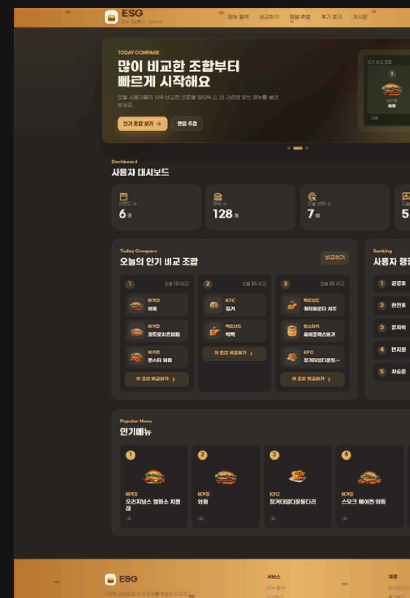

Frontend
- HTML
- CSS
- JavaScript
- jQuery
- React
 </>
</>
ABOUT ME
프로젝트 배포 전 테스트에서 댓글 화면 갱신 문제와 회원가입 아이디 중복 검증 누락을 발견해 수정했습니다. 아르바이트를 할 때도 반복되는 누락 항목을 체크리스트로 정리해 팀원들과 공유했습니다. 맡은 기능을 만드는 것에서 끝내지 않고 실제 흐름을 확인하려고 합니다.
TECH STACK
PROJECTS


SEMI TEAM PROJECT · 2026
지역별 친환경 활동을 공유하고 미션과 포인트로 참여할 수 있는 커뮤니티 서비스입니다.
CONTACT
포트폴리오를 봐주셔서 감사합니다.